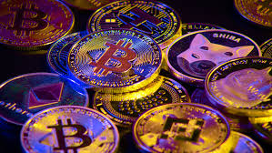
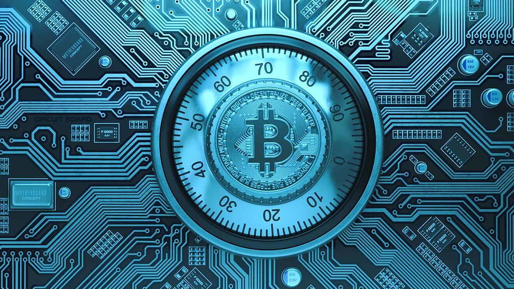
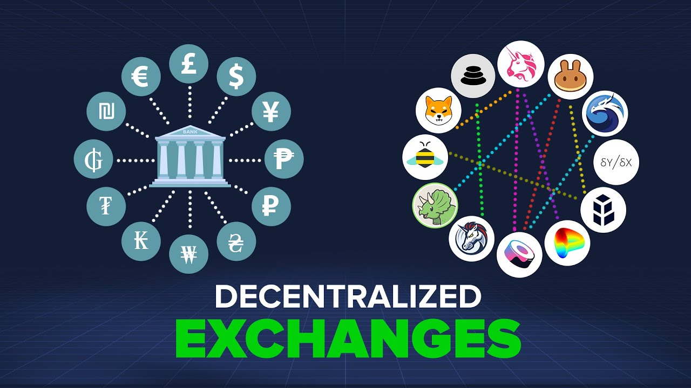

Article starting point.......
D.O.P-011/08/2022what is this bitcoin??
what is crypto ??
what is blockchain ?
what is DEX ??
if you're curious about all these questions then this blog is for u my friend

What is bitcoin ???
Bitcoin (₿) is a decentralized digital currency that can be transferred on the peer-to-peer bitcoin network.[7] Bitcoin transactions are verified by network nodes through cryptography and recorded in a public distributed ledger called a blockchain. The cryptocurrency was invented in 2008 by an unknown person or group of people using the name Satoshi Nakamoto.[10] The currency began use in 2009,[11] when its implementation was released as open-source software.[6]: ch. 1 Bitcoin has been described as an economic bubble by at least eight Nobel Memorial Prize in Economic Sciences recipients.[12] The word bitcoin was defined in a white paper published on 31 October 2008.[4][13] It is a compound of the words bit and coin.[14] No uniform convention for bitcoin capitalization exists; some sources use Bitcoin, capitalized, to refer to the technology and network and bitcoin, lowercase, for the unit of account.[15] The Wall Street Journal,[16] The Chronicle of Higher Education,[17] and the Oxford English Dictionary[14] advocate the use of lowercase bitcoin in all cases. What is crypto???
Cryptocurrency, sometimes called crypto-currency or crypto, is any form of currency that exists digitally or virtually and uses cryptography to secure transactions. Cryptocurrencies don't have a central issuing or regulating authority, instead using a decentralized system to record transactions and issue new units. What is blockchain??
A blockchain is a distributed database or ledger that is shared among the nodes of a computer network. As a database, a blockchain stores information electronically in digital format. Blockchains are best known for their crucial role in cryptocurrency systems, such as Bitcoin, for maintaining a secure and decentralized record of transactions. The innovation with a blockchain is that it guarantees the fidelity and security of a record of data and generates trust without the need for a trusted third party.  what is a DEX ??? A decentralized exchange (better known as a DEX) is a peer-to-peer marketplace where transactions occur directly between crypto traders. DEXs fulfill one of crypto’s core possibilities: fostering financial transactions that aren’t officiated by banks, brokers, payment processors, or any other kind of intermediary. The most popular DEXs — like Uniswap and Sushiswap — utilize the Ethereum blockchain and are part of the growing suite of decentralized finance (DeFi) tools, which make a huge range of financial services available directly from a compatible crypto wallet. DEXs are booming — in the first quarter of 2021, $217 billion in transactions flowed through decentralized exchanges. As of April 2021, there were more than two million DeFi traders, a ten-fold increase from May 2020.